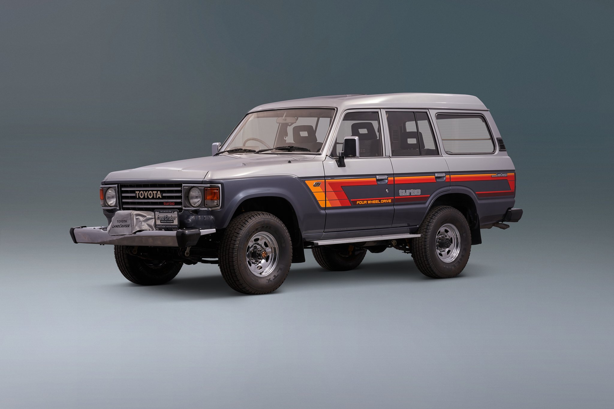

Motor 2H — Reconstrucción
En procesoCigüeñal rectificado 0.25 mm sobremedida. Pistones reemplazados por originales Toyota PN 13101-68010. Culata enviada a rectificación plana. Empaque de culata pendiente de instalación.

Restauración Premium · Vehículo Clásico 4×4
1986 · Carrocería Station Wagon · Motor 2H 4.0L Diesel
Cigüeñal rectificado 0.25 mm sobremedida. Pistones reemplazados por originales Toyota PN 13101-68010. Culata enviada a rectificación plana. Empaque de culata pendiente de instalación.
Caja de cambios desmontada y lavada. Sincronizadores de 3.ª y 4.ª velocidad desgastados. Rodamiento delantero reemplazado. Esperando kit de sincronizadores importado de Japón (ETA 18 jun).
Arenado integral completado. Aplicación de fosfato de zinc en zonas críticas (umbrales, pisos y pasos de rueda). Pintura epóxica de imprimación en dos manos. Carrocería lista para acabado final.
Mazo de cables completo deberá reemplazarse. Se utilizará arnés OEM Toyota BJ/HJ60 reproducido por ORIS Electric (Japón). Instalación programada para semana del 22 de julio 2026.
Discos delanteros medidos: 11.2 mm de espesor (mín. 11.0 mm, recambio recomendado). Cilindros de rueda trasera oxidados, en espera de cilindros nuevos. Líquido de frenos DOT 4 vaciado y tubería inspeccionada.
Amortiguadores Rancho RS5000 instalados en los cuatro puntos. Resortes helicoidales delanteros reemplazados. Rótulas y terminales de dirección sustituidos. Alineación y balanceo programados para post-motor.
Culata del motor 2H trasladada a Rectificaciones El Bosque (Alajuela). Se detectó deformación plana de 0.08 mm en zona cilindros 4-5. Plazo estimado de retorno: 5 días hábiles.
Medición con micrómetro de todos los muñones (main y rod). Desgaste dentro de tolerancia: 0.02–0.04 mm de ovalización. Cigüeñal aprobado para uso con cojinetes +0.25 mm. Rectificación innecesaria.
Trabajo de caja H55F suspendido temporalmente hasta recepción del kit de sincronizadores en tránsito desde Osaka. ETA confirmado: 18 de junio 2026. Sin impacto en ruta crítica del proyecto.
Cuatro amortiguadores RS5000 instalados y torqueados a especificación (90 N·m). Verificación de geometría básica realizada. Vehículo en posición correcta de ride height. Listo para alineación post-ensamble.
Segunda mano de pintura epóxica gris aplicada sobre toda la carrocería. Tiempo de curado: 72 horas. Inspección fotográfica realizada, sin faltas ni burbujas. Carrocería sellada y protegida para almacenamiento intermedio.
| Concepto | Proveedor | Monto |
|---|---|---|
| Pintura exterior completa (base + clear) | PinturAutos CR | ₡ 380 000 |
| Tapicería interior completa en cuero | Tapicería San Carlos | ₡ 245 000 |
| Alineación y balanceo 4 ruedas | TecniRueda Quesada | ₡ 35 000 |
| Llantas BFGoodrich KO2 A/T (×4) 265/75R16 | Goodyear San Carlos | ₡ 328 000 |
| Subtotal cotización pendiente | ₡ 988 000 | |